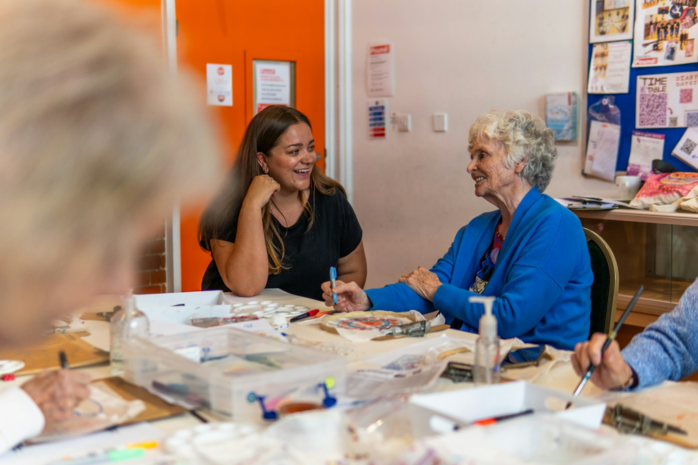

PROJETO PONTE
Conexões que aproximam pessoas, organizações e oportunidades na causa do câncer.
Uma plataforma de conexões e ensino para aprender sobre o câncer, encontrar organizações de apoio e participar de iniciativas da rede.
POR ONDE COMEÇAR
POR ONDE COMEÇAR
Escolha por onde começar.
01QUERO APRENDERAprender sobre o câncer.Quatro jornadas fictícias com aulas ilustrativas, materiais e atividades de revisão.Explorar o Oncoflix
02QUERO ENCONTRAR APOIOEncontrar organizações.Busque ONGs fictícias de diferentes regiões do Brasil por serviço e localização.Buscar organizações
03QUERO FAZER PARTE DA REDEParticipar do Ponte.Conheça os perfis e explore como pessoas e organizações poderão participar.Criar conta de teste
VISIBILIDADE E PROJETOS
Conheça a Vitrine Ponte.
Profissionais, empreendedores e projetos fictícios mostram como a rede poderá dar visibilidade a iniciativas com curadoria do Portal VPM.
Explorar a Vitrine Ponte